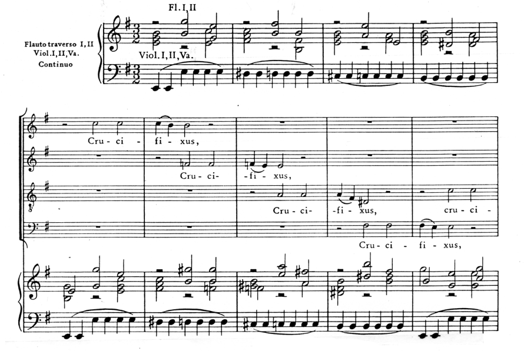
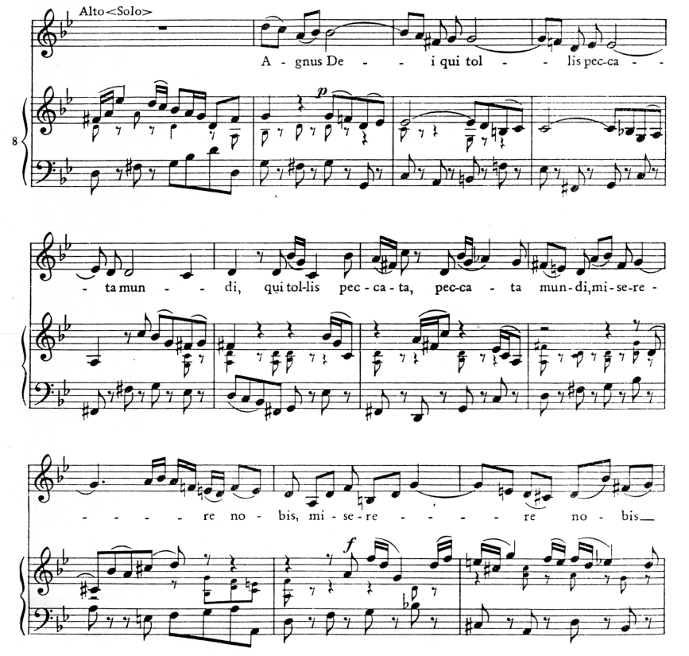

Месса си-минор Баха
При жизни Баха целиком не исполнялась, лишь первые две части он иногда использовал в воскресных богослужениях.
Мессу си-минор называют философской исповедью Баха, наиболее полным выражением его отношения к миру. Как и в Пассионах, композитор раскрыл здесь свой жизненный идеал, обращаясь к тому высокому в человеке, что не подвержено времени: готовность к нравственному подвигу, к самопожертвованию.
Философское содержание Мессы воплотилось в монументальной, новаторской форме, в значительной степени расширившей рамки традиционного канона.
Как известно, ритуал мессы – центрального обряда католического богослужения – складывался в течение многих столетий; также длительно отбирались молитвенные тексты. В ХI веке текст мессы был канонизирован и закреплен в следующей последовательности:
- Kyrie eleison («Господи, помилуй»);
- Gloria («Слава»);
- Credo («Верую»);
- Sanсtus («Свят»);
- Agnus Dei («Агнец Божий»).
Как музыкальная форма месса сложилась к XIV веку. И если ранее за отдельными частями закреплялись мелодии григорианского хорала, то со временем музыка приобретала самостоятельное художественное значение.
Сохранив основные канонизированные части, Бах расширяет их масштабы за счет выделения каждого текстового раздела в отдельный номер – всего их 24. Каждая часть предстает как строго продуманная композиция. На уровне частей можно наблюдать действие различных факторов единства. Это и внутренняя группировка номеров, и различные тематические арки, и тональные связи.
Кроме того, важную объединяющую роль в драматургии Мессы играет постоянное чередование монументального и камерного планов. Монументальный план представлен развернутыми хорами. Им Месса обязана грандиозностью своих масштабов. Второй план, камерно-лирический, составляют дуэты, 3 хора (№ 8, 15, 16) и 6 арий.
В Мессе си-минор получили обобщение 2 основных образных мира баховской музыки: мир страданий, глубокой скорби и мир света, радости, ликования, торжества. Неоднократное сопоставление этих ярко контрастных друг другу сфер составляют основу действенного, подлинно симфонического развития.
Линия сквозного развития сферы скорби и страдания берет начало в I части – «Kyrie». Она опирается на традиционную для этого раздела мессы трехчастность: 2 скорбных хора на один и тот же текст «Kyrie eleison» окружают светлый дуэт «Christe eleison». Оба хора выдержаны в полифоническом складе (первый – 5-голосная фуга, второй – 4-голосная).
Первый хор близок духу пассионов, рождает представление о шествии подавленных горем людей. Тема фуги отличается сумрачной минорной окраской, обилием хроматизмов, напряженной интерваликой (тритоны, ум.7), подчеркиванием «интонации вздоха», ладотональной неустойчивостью (отклонение в e-moll), преобладанием ровного ритмического движения в медленном темпе. Напевные интонации сочетаются в ней с декламационными оборотами.
Второй хор «Kyrie» представляет совершенно иное прочтение того же текста – в его музыке не страстная мольба, а аскетическая строгость. Хор выдержан в духе строгой полифонии XVI века.
Экспозицией второй сферы – радости и ликования – является «Gloria» (хотя № 2 – светлый и безмятежный дуэт «Christe eleison» – уже отчасти наметил эту линию).
Музыка хора «Gloria» (№ 4) подобна хвалебному гимну. Его тема начинается сначала в оркестре, в котором выделяется праздничная звучность труб. Затем к оркестру присоединяется хор со словами «Богу в вышних слава».
В мелодии хора сочетаются фанфарные интонации с виртуозными вокализами, где один слог текста распевается на много звуков (такой тип мелодики идет от «юбиляций»). Легкое и четкое движение на 3/8 напоминает музыку танцевальных сюит Баха. Этот хор перекликается своим общим торжественно-триумфальным настроением с другими D-dur-ми хорами и во II, и в IV (Sanсtus) частях мессы.
Хотя II часть мессы в целом выдержана в праздничных тонах, в ней продолжается развитие линии скорби, идущей от хоров Kyrie, в частности, в центральном номере – хоре № 8, «Qui tollis» («Ты, принявший грехи мира»). Здесь возвращается тональность h-moll, музыка опять сближается по духу с пассионами. Однако ее характер скорее трогательный, элегический, чем горестный, звучание камерное. Главная индивидуальная особенность – мелодия солирующей флейты, создающая второй план хоровым голосам.
Главное содержание III части («Credo») сосредоточено в трех серединных хорах, где возникает краткое повествование о том, как Христос принял человеческий облик (№ 15, «Et incarnates» – «И воплотившись»), страдал и был распят (№ 16, «Crucifiхus» – «Распятый»), а затем снова воскрес (№ 17, «Et resurrexit» – «И воскрес»). Эти три хора являются идейно-образным центром всего произведения. Хоры № 15 и 16 связаны общностью содержания: оба продолжают скорбную линию мессы, причем «Crucifiхus» является ее вершиной, трагической кульминацией мессы.
Этот номер можно назвать хоровым lamento. Его музыка воплощает трагический образ распятия, мученической смерти, который привлекал многих живописцам XVI-XVII веков, в том числе немецких (Грюневальд, Дюрер). В музыке для воплощения подобного содержания идеальной формой считались вариации на basso ostinato. Бах подхватывает эту традицию. Тема, положенная в основу вариаций – отрезок хроматической гаммы от I ступени к V. Она повторяется 13 раз неизменно, при этом каждый раз меняется гармония. 
С гармоническими вариациями оркестра сочетаются полифонические вариации хора. С самого начала нет сплошного голосоведения – голоса возникают будто разрозненно, «несвязно», повторяя одну и ту же интонацию скорби – нисходящую м.2.
Сопоставление этого хора со следующим, № 17, образует самый яркий контраст в пределах всей мессы. Суть контраста – переход от смерти к воскресению. «Et resurrexit» –это вершина в развитии образов ликования и торжества, и весь комплекс выразительных средств направлен на воплощение чувства всепоглощающей радости. В первых же тактах одновременно с хором вступает весь оркестр с трубами. Несомненны черты праздничной концертности (сопоставления разных регистров, виртуозный блеск). Используется характер движения и ритм полонеза. Мелодия, начинаясь с энергичной восходящей кварты, неудержимо стремится вверх, при этом ее строение симметрично.
В 5-й, самой лаконичной части мессы (всего 2 номера), все сильные образные контрасты отступают: она не содержит ничего празднично-триумфального или остро трагедийного. Остается память о пережитой трагедии в арии альта (№ 23, «Agnus Dei» – «Агнец Божий») и сила духа, спокойная уверенность в заключительном хоре. Музыка хора является повторением № 6 «Gratias» («Благодарим»), но с другими словами – «Dona nobis pacem» («Даруй нам мир»).
Выражение скорби в арии имеет оттенок кротости и мягкости, основное ее содержание – умиротворенная печаль. 
Характерна тональность – не h-moll или e-moll, а g-moll. Эта тональность – минорная S-та D-dur – является связующим звеном между образами скорби (минора) и радости (мажора).
Где купить
| Исполнение Отто Клемперера, 1968 г. | 2 CD |